Voice of Piece · Congressional App Challenge Prototype
Two Artists.
Two Cultures.
One Creation.
A platform helping emerging artists in Los Angeles and Tanzania discover one another, build relationships across distance, and create meaningful work together.
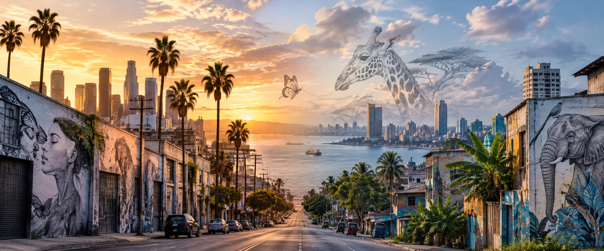
ABOUT THE PROJECT
What if the missing resource isn’t talent—but the chance to be discovered?
Voice of Piece begins with a simple problem: talented emerging artists can live thousands of miles apart, create work with powerful ideas, and still never have a reason or a way to meet.
This project tests whether technology can make that first connection easier. Instead of starting with a complicated matching algorithm, we are starting with real artists, real stories, and real collaboration.
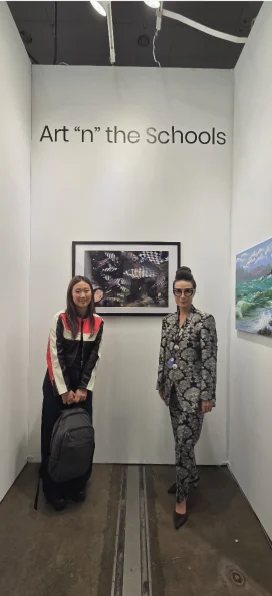
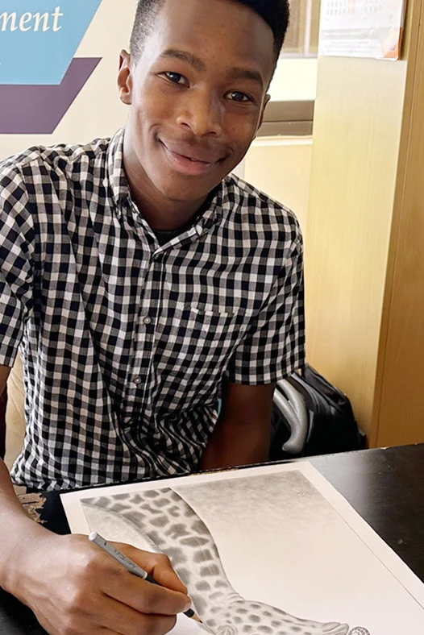
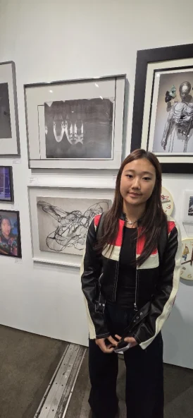
REAL WORK
REAL CONNECTIONS
ONE LINE, TWO WORLDS
Grace Lee × Ezekiel Charles Loishooki
A real LA × Tanzania collaboration gives the project something more useful than a hypothetical: a working example of how two visual languages can meet without erasing what makes each artist distinct.
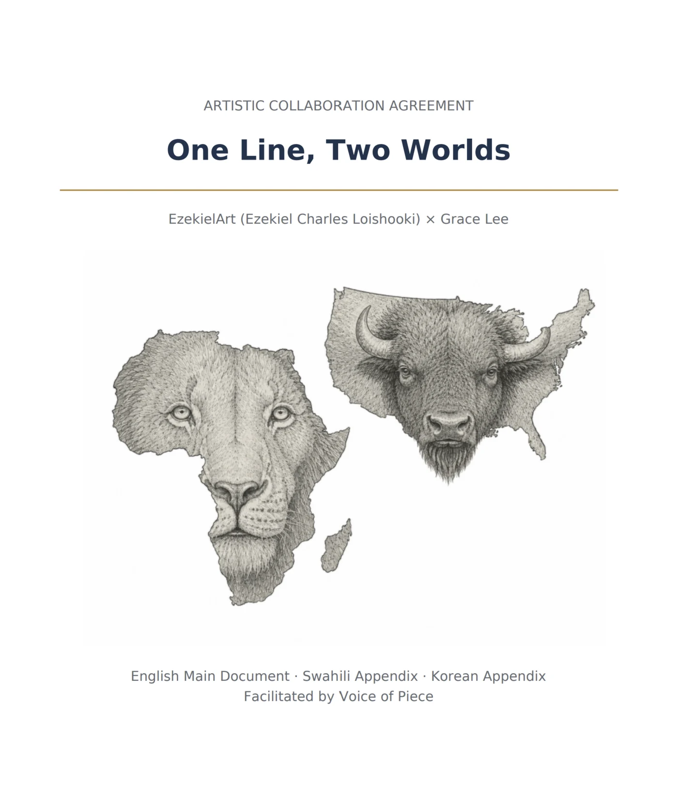
THE COLLABORATION
Two places become one composition.
The visual concept brings together wildlife imagery, geography, and detailed line work: an African lion integrated with the shape of Africa and an American bison integrated with the shape of the United States. The two remain recognizable, but the final work is designed to be read as one shared visual statement.
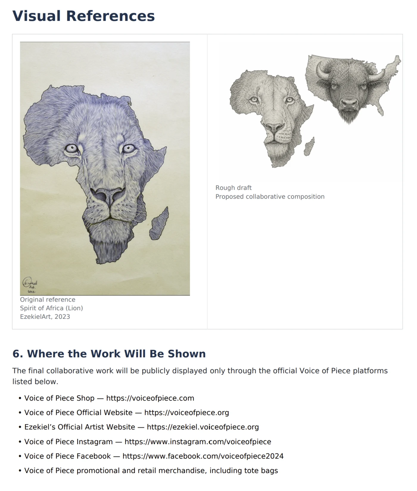
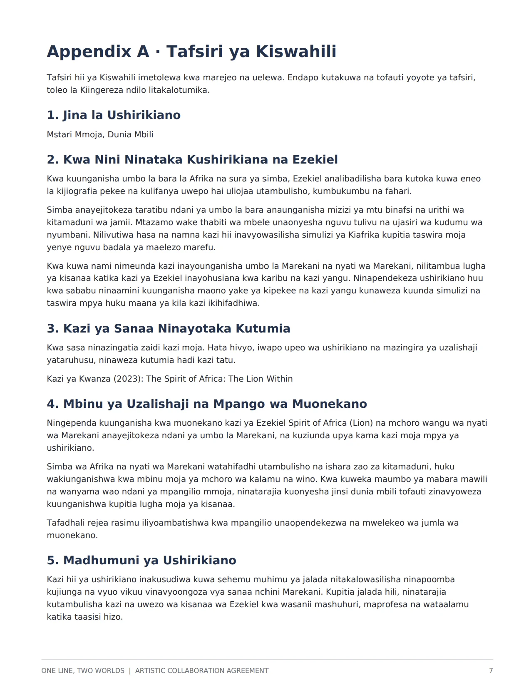
ART, NOT JUST A PROFILE
The work should stay at the center.
Artist discovery only matters if people can actually experience the art. The platform is designed to let process, detail, and story do more than a short bio ever could.
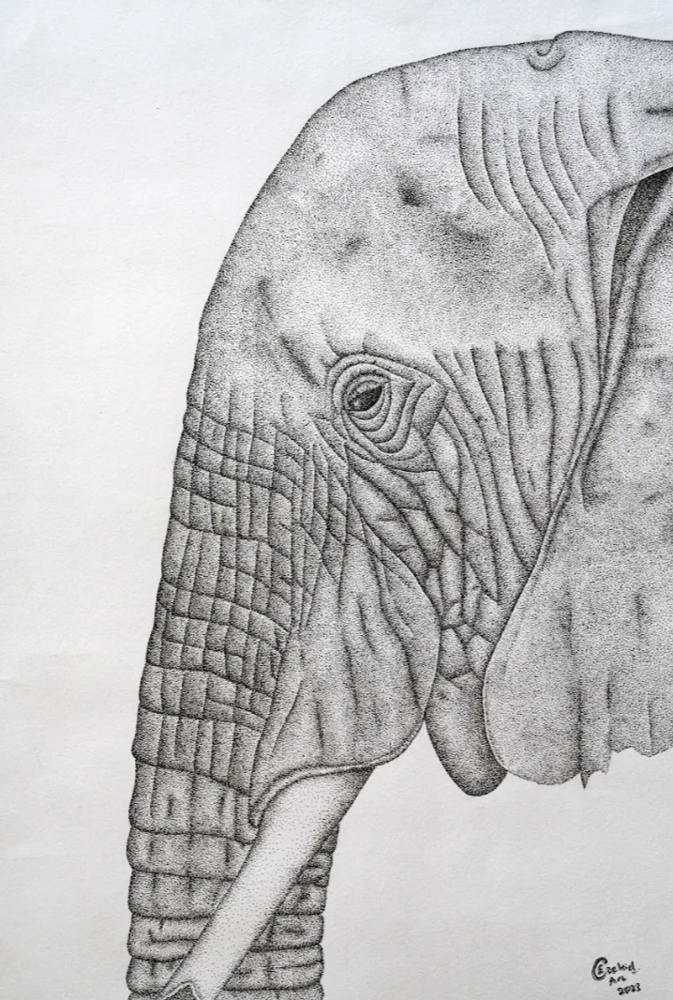
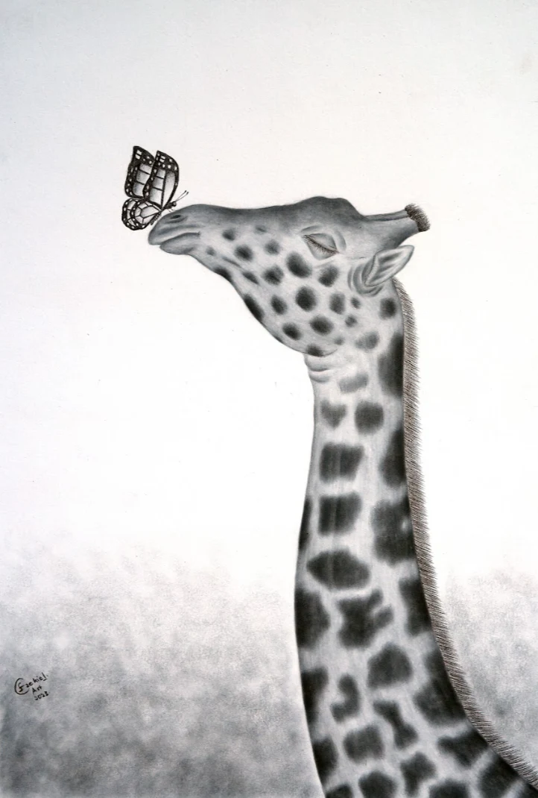
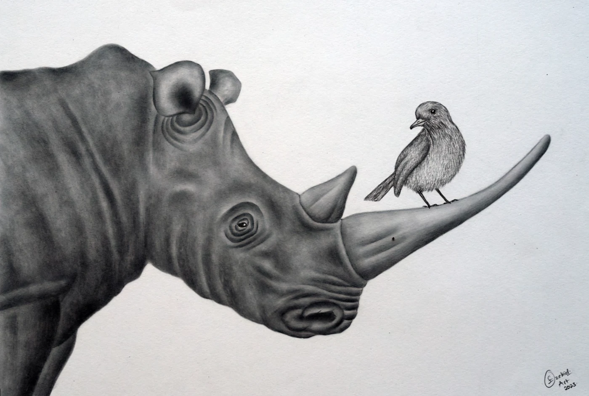
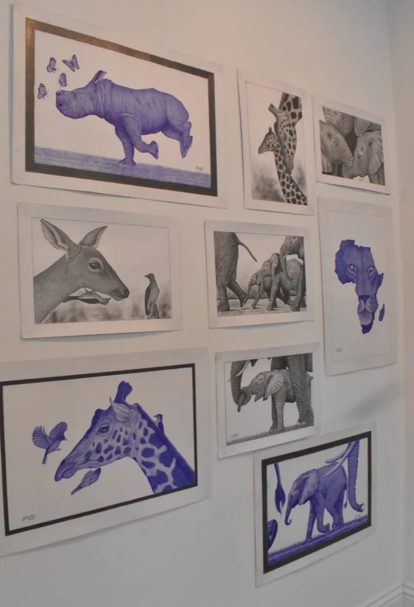
FROM ARTIST → AUDIENCE
Discovery can continue beyond one webpage.
Voice of Piece can connect artist profiles, collaboration stories, exhibitions, social media, and physical products—giving emerging artists more ways to be seen without making commerce the center of the project.
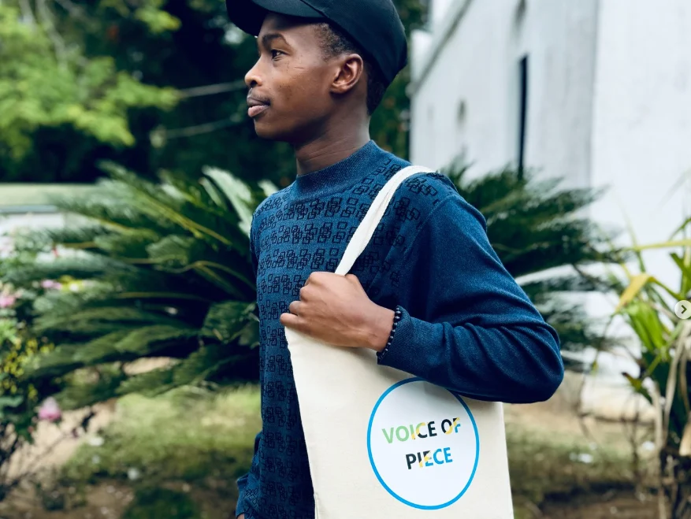
JOIN AS AN ARTIST
We’re building this with artists, not just for them.
We are looking for emerging and independent visual artists in Los Angeles and Tanzania who are open to meeting someone outside their usual creative circle.
You do not need gallery representation, a large following, or a perfect portfolio. We care more about the work you are making, the ideas behind it, and whether you are curious about creating with someone new.
ARTIST APPLICATION · MAOMBI YA MSANII
Tell us who you are and what you want to create.
English
This short application helps us understand your art, what challenges you face, and what kind of collaboration would feel meaningful to you.
Kiswahili
Fomu hii fupi inatusaidia kuelewa sanaa yako, changamoto unazokutana nazo, na aina ya ushirikiano ambayo ungependa kushiriki.